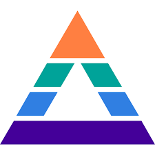

AI/ML Engineering Intern

Pyramyd.ai — May 2025 to Aug 2025
- Architected an AI-powered software scoring platform for 3000+ SaaS vendors using RAG pipelines, model fine tuning and multi agent orchestrations achieving 300 ms latency and 99.9% uptime
- Implemented MCP-based AI agents to orchestrate retrieval, scoring, and recommendation flows across LLM, graph, and sentiment models, improving context adaptation and reducing redundant calls by 25%.
- Designed and trained a semantic matching model using Sentence-BERT with CosineSimilarityLoss to align unstructured review text with predefined product feature descriptions.
- Engineered a feature-level review analysis pipeline, combining dynamic text chunking, embedding clustering (UMAP + HDBSCAN), and multi-step data enrichment (fuzzy feature mapping, chunk aggregation).
- Developed contrastive learning pipeline improving vendor–buyer match recall by 14% and deployed it via FAST APIs.
- Performed PEFT and LoRA fine-tuning on OpenAI and Open source models for extracting aspects and sentiments from user reviews
- Integrated Aspect-Based Sentiment Analysis (ABSA) and few-shot prompting using OpenAI o4-mini-high to capture feature-level sentiment, enabling interpretable, data-driven scoring insights across customer feedback.
- Designed a graph-based model to depict competitors & capabilities of software using feature and review similarity.
- Implementing a Multi-Layer Perceptron (MLP)-based regression model with uncertainty estimation, meta-modeling, and k-fold validation to ensure prediction robustness and reliability.
- Automated model refresh and deployment with MLflow on GCP, reducing manual model retraining by 3.3x.